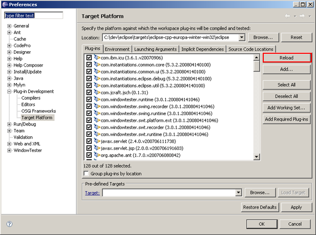
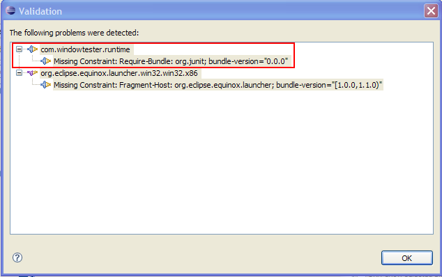

When developing applications that share the same plug-in configuration as the eclipse IDE, nothing special needs to be done to add the WindowTester Pro libraries to your environment. On the other hand, if you are developing against a custom target that is not based on the IDE, you will need to add the WindowTester Pro plugins to your target yourself.
The first step is to create a provisioner based on your current WindowTester Pro installation. To do this, start the New WindowTester Pro Target Provisioner wizard. Open the New Wizard Selector: File > New > Other... and select WindowTester Pro > WindowTester Pro Target Provisioner.
Click Next> and specify the type of target you want to create and choose a destination for the created target.
Once the target has been created, you can use it in one of two ways:
You can add the WindowTester Pro target plugins to your target platform by opening the Target Platform PDE preference page (Window > Preferences > Plug-in Development > Target Platform), clicking Add...
selecting File System from the list of provisioner types:

and then click Browse... and pointing to where you created your target provisioner:
Finallly, click Reload then Add Required Plug-ins:
If you use a target definition file, add the target directory to your target definition by clicking the Add... button in the Additional Locations section of the target overview.

Browsing, as above, to the target's location on disk. Finally, be sure to reload your target and add required plugins (see above).
If the Recorder control does not appear or the Record button is disabled when you launch a recording, it's likely due to a missing plug-in.
One way to find out what plug-ins are missing is to click the Validate Plug-ins button in your recording launch configuration. If something is missing,
you should see something like this window:

If this is the case, find that bundle in your eclipse installation's plugins directory and then copy it into the file provisioner you made with the WT plugins in it. You'll probably need to reload your provisioner too. When this is done, you should see the junit.org plugin available in your launch configuration's list of available plugins. Once it is, select it and retry recording.